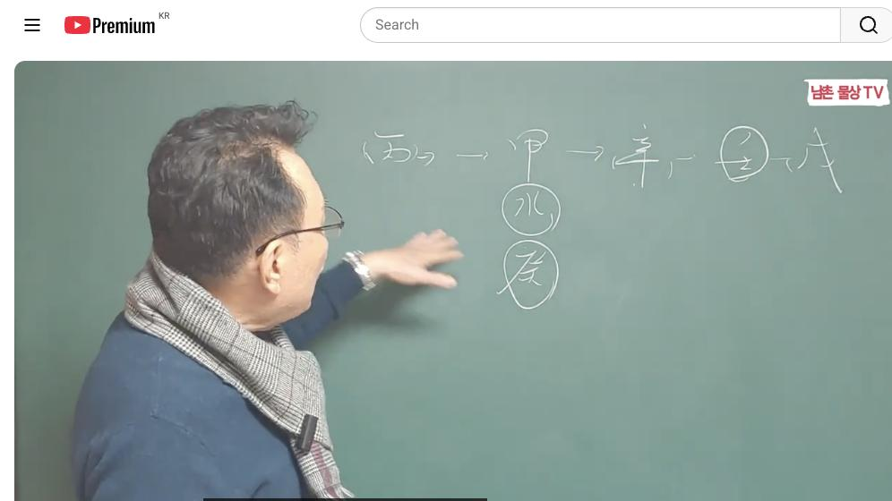
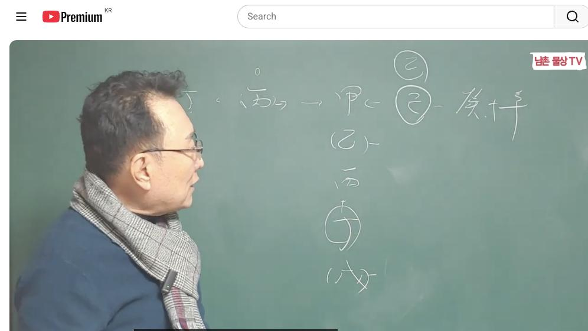

남촌물상TV 전체 문서 › 동영상 V0040
[기본원리]15강 역대 대통령 중 병화 일간은 없다, 여기에 놀랄만한 이유는? 상담문의:010-3139-6645

| 문서 번호 | V0040 (동영상) |
|---|---|
| 영상 URL | https://www.youtube.com/watch?v=XSCzFnzIA3k |
| 영상 ID | XSCzFnzIA3k |
| 게시일 | 2024-01-15 |
| 길이 | 23:25 (1405초) |
| 조회수 | 8,596회 (수집 시점 기준) |
| 카테고리 | Howto & Style |
| 자막 | ko (자동생성) |
| 수집 시각 | 2026-08-30 17:03 (KST) |
영상 설명 (YouTube 설명 원문 그대로)
역대 대통령 중 병화 일간이 없었던 놀랄만한 이유는? #기본원리 #대통령 #병화일간
전체 자막 (495구간 · 타임스탬프 클릭 시 해당 장면으로 이동)
[0:01][음악]
[0:04]자 이제 세 번째
[0:06]시간입니다 세 번째
[0:08]시간에는 병화를 가지고 설명을
[0:11]드리겠습니다 병화 일주가 가지고 사는
[0:14]특성 병화의 관계를 설명을 드릴
[0:17]건데이
[0:19]병화는 우리는 물상에서 뭐 태양으로
[0:22]본다 자 태양이라 병화 주들이이 있죠
[0:26]병화일주 특성이 뭘까요 병화는 굉장히
[0:31]잘난 사는 사람들요 그래서 자기가
[0:34]뭔가 학교 가도 뭘 할까 반장을 해야
[0:36]되고 뭔가 자기 주장이 강할 수 있고
[0:38]첫도 있고 괜찮다 이렇게 보는데
[0:41]그렇지만 제 2인자다 물상론이라 것은
[0:46]어 대통령이 병화일간 대통령이 없어요
[0:49]거의 보면 그 병화 대통령이 못합니다
[0:52]병화는 첫째 어떤 조을 가지면 목에
[0:56]꽃을 주는 주는 역할을 하는 거예요
[0:59]그서 우리가 병화
[1:02]일관이이 표현이나 이런 방법이 굉장히
[1:06]잘하지만 학교에서 반장 할망정 전체
[1:09]해장할 때는 병화 일관 어렵다 어려운
[1:12]거예 왜 태양이라는 자체는 자기를
[1:16]빚을 낸게 아니라 남을 빚내 주는
[1:19]역할이 제 2인 참모 역할은 최고
[1:21]잘할 수 있다 하는게 특징이에요
[1:23]그다음에 병화의 재물은 뭐냐 병화의
[1:26]재물은 합으로 신금이 제물이요
[1:29]그래서 병화는 큰 재물을 가질 수가
[1:32]없는 거예요 그래서 작은 재물의
[1:37]욕심을 갖지 말고 어 큰 재물 욕심
[1:40]갖지 말고 작은 걸로 만족을 취하고
[1:42]사는게 좋다 이게 그 구체적인
[1:45]실정이에요 그러까 우리 병화 일간이
[1:48]이제 특히 이제 갑 병오 있잖아 오
[1:51]병호 일주 병호 임모 이런
[1:55]사람들이 뜨겁다 얘기는 수게 불른
[1:58]정렬로 봐도 좋아 성욕이 굉장히 좋은
[2:01]사람들이 많다 뭐 이렇게 해도 되는
[2:03]거고요 또 병화는 자기가 구속받는 걸
[2:07]싫어해 그래서 왜 재물을 우리가
[2:11]신금의 재물을
[2:13]얘기냐면이 병화의 신금 합을
[2:16]하기 때문에 자기가 병화의 기지를
[2:19]잃기 때문에 작은 재물만 가지고 살리
[2:23]큰 재물 갖고 산 것부터 작은 재물로
[2:25]산다 하는 거예요
[2:27]그러면 관이 병화의 관이 뭐예요 물이
[2:30]병화에 가는 물이에요 자 병들은
[2:33]어디에 뜨기를 좋아해 임수의 뜨기를
[2:35]좋아한다 우리 무상 특징이에요 그럼
[2:38]임수의을 좋아한다면 이때 자기가 최고
[2:40]빛이 나는 거예요 그 사주의 병화
[2:42]일간이 임수에 물이 떠 있고 또 물만
[2:47]떠 있으면 뭐해 어디 어떤 물에 냐가
[2:51]중요한 거죠 그럼 물을 뜬다는 얘기는
[2:53]우리가 여기 있을 때 자
[2:56]무토 임수를 막아놓고 호수를 만들 때
[3:00]때 제일 아름다운 것이다 그럼 뭘까요
[3:03]여기 보면 오이 다 들어갔네요 그러면
[3:06]병화는 임세 뜨기를 좋아하는데
[3:09]흘러가는 물의 태양이 비칠 때와
[3:11]호수의 물의 태양의 차이점을
[3:13]이해하시면 된다 그럼 우리는 흘러가는
[3:15]물에 비칠 때는 빛이 발산이 되기
[3:18]때문에 자기의 능력을 제대로 발할 수
[3:21]없는
[3:22]것이고 호수의 맞은 잔잔한 백조
[3:25]호수의 햇빛이 비칠 때는 그 빛을
[3:28]제대로 받아들이고 발산하기 때문에 에
[3:30]가장 좋은 역량과 능력을 발휘할 수
[3:34]있는 때 그래서 우리는 병화는 임새
[3:37]뜨기를 좋아한다 이렇게 한 거예요
[3:39]그러니까 호수가 반드시 돼 있을 때은
[3:42]물과 흘러가는 뇌물에 흘러가는 물에
[3:46]태이 뜰 때 차이점으로 이해하시면
[3:48]굉장히 좋게 설명을 드릴 수 있다이
[3:51]말이에요 그래서 이제 병하 것은
[3:54]뿌리가 5화도 4화도 됐죠 우리가
[3:56]보면 이제 화의 뿌리는 병화 뿌리는
[3:59]4화도 다 되는 거예요 뭐 정화에
[4:01]뿌리도 되고 적 하는데 그냥
[4:03]포괄적으로 사오미 그러면화에 뿌립니다
[4:05]이렇게 보시면 돼요 그러면 병화는
[4:10]자체는 사회생활할 여건에서는 어떨까요
[4:13]사회생활여 활동력 경정 그러니까 자
[4:16]평화 일간의 여자들은 집에서 노는
[4:20]여자가 없어 왜 태양이라는 것은
[4:24]아침에 태양이 뜨고 저녁이 되면지고
[4:27]그다음에 또 뜨기 때문에 항시 새로
[4:30]일을 찾는게 병화 수도 있네 병화
[4:34]관들은 절대 집에서 가만히 놀고 있는
[4:37]사람이 없다 이게 특징이에요 그래서
[4:40]병화 일주의 여자분들을 데리고 사는
[4:44]남편들은 밖에
[4:46]나간다고 제동을 걸면 어떤 현상일까요
[4:50]나 못 사로 소리까지 나와 그렇기
[4:52]때문에 병화일간 자들 활동할 수 있는
[4:55]범위를 제대로 만들어주기 좋다 그러
[4:58]병화 일간이 회사로 간다 보면은
[5:00]회사에 보면 무슨 일 할까요 자 병화
[5:03]특징이 방송 언론 교육 홍보 이런
[5:07]관계성이 강하다 그렇기 때문에 홍보나
[5:10]이런 관계성이 일해도 좋다 이렇게 볼
[5:13]수가 있는게 병화가 살아나가는
[5:15]방법이에요 그럼 우리 이제이 병화의
[5:18]관계성을 설명을
[5:20]드렸는데
[5:21]병화가 만약에 계수 사주에 계수가 와
[5:25]있어요 자 그러면이 계수가 왔다고
[5:28]생각하면 린다 그 말이에요 그 병
[5:31]어두워지 있죠 그러면
[5:33]자이 관이 관이 사주의이 여기에
[5:37]계수가 하나 있다고 봐요
[5:39]게서가 병화 일관 계수가 있어 그럼
[5:42]관이죠 관 내 남편 여자가 남편
[5:46]남편이 나를 흐리게 만들라이 설명이
[5:48]되잖아요 그래서 그냥 아 남편이 뭔가
[5:52]흐리게 만드네 그렇게 할 수 있는
[5:54]것이고 합수를 끼고 있는 관이
[5:57]없을 때 합수를 가지고 있는
[5:59]사주는 물이 없을 때 합수 돼
[6:02]사주는 보이지 않는 드러낼 수 없는
[6:06]관이 물이에요 그렇기 때문에 여자라면
[6:09]드러낼 수는 남자와 인연이 있을 수가
[6:11]있다 이렇게 보는 거예요 그래서
[6:15]합수 돼서 여자가 관계 어떤
[6:18]어어 어 이루어진 관계가 있다고
[6:21]생각하면 어느 통 나느냐 풀어질 때
[6:26]병화 운이 오고 자 근데 우리는
[6:28]이제에 그여자 가 애인을 두고 어
[6:31]관계 있다가 잘 나가다가 보통 보면
[6:34]들통이 한번씩 나죠 병화가 들통이
[6:37]잘나요 왜
[6:40]그러느냐 병 관이 없을 때는 무관
[6:43]사주라는 것은 금사파 사주로죠 우리
[6:46]금방 사랑에 빠지라 그러면이 관이
[6:48]없는데 사주에 신금과 병화가 같이
[6:51]있어요 그러 자 합수를 할 거
[6:54]아니에요 그럼 여기에 물이 생기는데
[6:57]자 물이 수가 생기는데
[7:00]자 물이 무슨 물이라도 우리는 가지에
[7:02]몰랐어요 우리 물상 금방 알라 자
[7:05]병신인 합수 물은 계수 왜 합의
[7:09]정화가 어둡기 때문에 계수로 하는
[7:11]거예요 그래서 합수 물은 계수가
[7:15]된다 그
[7:16]말이에요 자 그러면 합수 물이
[7:20]어건 여자 사주라는 합에서 물이
[7:24]구성이 되기 때문에 드러낼 수 없는
[7:27]남앞에 이것이 내 남편이요 내 남자
[7:30]드러 낼 수 없는 관계가 이루어질
[7:33]수가 있다라고 이해하시면 된다 이게
[7:35]특징이에요 자 그래서 무관사주 경우는
[7:38]별로 그렇다 얘기고 만약에 아까
[7:41]임수가 된다는 관인 좋죠 그래서
[7:44]계수의 남편과 임수의 남편의 차이점을
[7:47]설명을 드린 것이다 또 남자는 뭐예요
[7:50]평화면 내 명예를 추구하는 것이고
[7:52]관해에 뜨니까 내 명해 자기가 살
[7:55]방법도 좋고 근데 병화가 계수를 뜨게
[7:58]되면은 내 을 어둡게 만들기 때문에
[8:01]능력 발이가 안 된 걸로 이해하시면
[8:03]된다 이게 이제제 전체적인 병화가
[8:06]살아나가는 방법이에요 그럼 자
[8:08]사아하는 방법 중에서 우 다시 뭘로
[8:11]가느냐 이제 관으로 한번 가보자
[8:16]관으로 자 병화의 감목 관계 목화통명
[8:20]관계죠 그러면 자
[8:23]병화가
[8:26]자기가으로서의 우성이 아니라 목
[8:29]펴주는 걸 역할을 하기 때문에 이거는
[8:32]제 2인자가 되는 거예요 쉽게해서
[8:34]그래서 병화 일간이 목화가 같이 있다
[8:37]얘기는 내가이 목 보통은 뭐 목생화
[8:41]인성 이렇게 해서 아무 필요 없는
[8:43]거예요 어 근데 이제 우리들이 봤을
[8:46]때는 어 내가 불빛이 강한데 고조는
[8:50]목생화 그러면 나를 더 밝게 만들어
[8:51]주 좋다 할 수도 있는 거예요
[8:53]어머니하고 관계가 좋다 안 좋다
[8:55]괜찮다 이렇게 뭐 해석도 하겠지만은
[8:58]우리 상 그걸 떠나서 현실을 유지로
[9:01]한다 모든 것이 지금 살아는 과정은
[9:03]현실 유주 내 자식도 나이가 들어도
[9:06]모시지 않는 세상 또 내가 벌름고
[9:09]사는 이런 세상 이런 나이가 들어도
[9:12]내가 존재할 수 있 살아가려면 내
[9:14]능력을 길리는 세상 이것이 바로
[9:16]현실이기 때문에 우리 물상론
[9:18]현실주의의 사주로 가기 때문에 차이가
[9:20]있는 것이다 보면 돼요 그래서 목화
[9:23]통명 하면 좋다이 관계가 갑목과
[9:27]병화의 관계는 굉장히 좋은 관계
[9:29]보시면 된다 그다음에 병화의 을목의
[9:32]관계 자 병화 을목의 관계를까 자
[9:35]전번에
[9:36]설명하듯이 병화가 햇빛이 너무 강하면
[9:39]여기에 뭐가 된다 나무가 말라서 죽게
[9:42]돼 있다 그러면이 관계성이 나무가 살
[9:46]살아 나가려 같이 살아 나가려면 뭐
[9:48]어떻게 살아 나는거냐 햇볕을 병화
[9:51]일간이 감목고 관계에서
[9:53]유지한다면 여기에는 뭐가 있을까요
[9:56]계수의 운이 오거나 그러면 여기가
[10:00]뭐가요 정하의 기질로 되는 거죠
[10:04]그래서이 적당한 물과 적당한 햇빛을
[10:07]관계를 유지했기 때문에이 을목이
[10:10]만약에 주고 병하고 왔다 생각하면은
[10:12]반드시 이렇게 계속 해 굉장히 좋은
[10:15]운이 되는 거예요 그다음에 다음에 또
[10:19]한 거는 뭐예요 신금이 와 사지
[10:21]신금이 왔다 그럼 합이 되면
[10:24]역시 정호가 된다 그럼 물이
[10:26]되잖아 그게 나의이 재물
[10:30]합해서 나의 관을 만들 수가 있고
[10:33]여기의 을목을 살아나갈수 때문 이때
[10:36]작은 부동산도 생길 수 있다이는
[10:37]거예요 그래서 이런 관계를 잘
[10:40]이해하시면 어느 때 작은 건축물도
[10:42]생길 수 있고 작은 부동산이 생길 수
[10:44]있고 큰 부동 생 수 있고 이런
[10:46]관계를 쉽게 알아 수가 있다 하는
[10:49]것이 우리 물상의
[10:51]특징입니다 자 그다음에 그다음에 병화
[10:54]병화 자 병화 병이 병화 두 개 떠
[10:58]있어 자 이라 유일무의한 존재죠
[11:01]천상여 독잔 중에서도 유일무의한
[11:04]존재다 하나밖에 없는 양이지 둘은
[11:06]있을 수 없다이 관계를 이해하시면
[11:08]돼요 근데 같은 태양이 두 개 있을
[11:10]때 우리 물상 뭐라하냐 두 개가 같이
[11:14]어둡다 어두워진 걸로 보싶다 그
[11:16]말이에요 그래서 그러면 여러 가지
[11:19]이제 이해 측면이 되겠는데
[11:22]여기서는 병화가 두 개 같이
[11:25]있는데
[11:27]여기는 병신일
[11:30]여기는 병가 돼 있다 그
[11:32]말입니다 그러면
[11:38]어 임자 병자 이렇게 한번 봅시다
[11:43]그러면 일간이 병화 가라면 나는 재를
[11:47]깔고 있고이 사람은이 사람은 같은
[11:50]나고 동급생 있제 사람은 관을 깔고
[11:52]있다 자 그러면 이런 사람의 관계를
[11:55]한번 생각을
[11:57]해보자 두 사람이 어다 그 말이에요
[12:00]그러면 여기에 관이 재물로써 뭐가
[12:05]신자 진이 되면은 어떻게 재물과 관이
[12:09]동시 생긴 거죠 그러면 이런 관계에
[12:12]서로가 동업을 한다면 동업을
[12:16]한다면 재물은 병화 일간이 체 것이고
[12:20]명예는 누구가 가져가 병자가 가져가게
[12:23]돼 있다 그래서 회사를 설립한다면
[12:26]대표는 네가 하고 재물은 내가 보겠다
[12:28]이렇게 이렇게 이해해도 되는 것이
[12:30]우리 무상의 해석이요 그래서 이런
[12:33]관계를 잘 이해하시고 사주를 보기
[12:36]때문에 현실에 맞는 사주가 돼야 돼
[12:38]그게 나하고 똑같은 겁지 나를 뺏어
[12:41]간게 아니라 항식 그죠 음과 양이는
[12:44]요무 상세 유와 무가 공개하는 시대
[12:47]이것이 우리 물상의 존재적인 가치로
[12:49]생각하기 때문에 같이 서로가 사는
[12:51]거예요 자 그러면 합에서 재물과 물에
[12:54]주식 회사를 만들 때 괜찮아요 해
[12:56]괜찮다 왜 재물과 내 관이 동시
[13:00]생기니까 괜찮은거다 이렇게 보시면
[13:02]된다 그 말이에요 그래서 물상 해석은
[13:04]쉽게 해석하는 방법이 있다 자
[13:07]그다음에
[13:09]그다음에 이제 병까지 했어요 자
[13:12]병까지 했고 그다음에 정화로 가자 자
[13:15]정화 정화는 어떤 것이 정화라는 것
[13:19]자 우리는 물상 태양과 달로서
[13:22]구별했다 그러면 제가 태양이라 것은
[13:25]보여지는 세상 현실 세계 다른 보여지
[13:28]않는 의의 세계 말이 그래서 양의
[13:30]세계와 음의 세계가 동시에 가치 자
[13:34]현실과 이상의 가이 있기 때문에
[13:37]뭘까요 갈등을 느낄 수밖에 없다
[13:40]그래서 우리 이걸 뭐라 하냐 현실과
[13:42]이상의 갈등 이렇게 변한다 그래서
[13:45]사주에 병정이 같이 있다면 현실과
[13:49]이상을 느끼고 사는 사람이 맞네요
[13:51]하면 맞다 이게 정상이에요 그래서
[13:55]현실이 양이기 때문에 현실 시간이기
[13:58]때문 문에 이상의 세계 그 현실과
[14:01]이상의 서로 갈등을 느끼는 관계다
[14:03]이렇게 보시면 된다고 그러면 내가
[14:05]밝아지면 어떻하냐 만약에
[14:07]가지면 여기에서 임수 운이
[14:11]와서 정림 한목을 결과적으로이 제거가
[14:15]되면 병호가 밝아지는 거죠 그럼 누가
[14:17]와서 줬어 나의 관이 와서 이걸
[14:20]제거시켜 주는 과같은 거야 그러면 자
[14:23]관이라는게 누구예요 나의 명예 나의
[14:26]직업 그럼 만약에 회사에서 같이 있는
[14:28]사람이라 면 운이 임수이 왔어요 그럼
[14:31]누가 좋을까요 반드시 내가 좋다 그
[14:34]말이에요 상대를 제거하고 내 임수의
[14:37]관이 와서 내 명예가 와서 동시에지기
[14:39]때 내가 성진의 기회 또 어떤
[14:42]경쟁이기는 기회가 되기 때문에 이렇게
[14:45]이해하시면 가장 쉽게 표현할 수 있다
[14:47]그 말입니다 이해 됐죠 자 그다음에
[14:50]그다음에 자 모토예요
[14:53]무토 자
[14:55]무토 여기에 이제 토라는 것은 뭐
[14:58]우리 생토 뭐 식신 이렇게 간게
[15:01]아니라 땅에 태양이 떠 있어요 그러면
[15:04]땅에 태양이 있다는 것은 땅 토일주
[15:06]확시 뭐가 있어요 땅에 나무 심는
[15:09]원칙으로 돼 있어요 그러니까이 나무가
[15:12]심어져 있을 때 햇빛의 관계가 돼야지
[15:16]그냥 화생토 관계로서 별로 의미가
[15:19]없는 거예요 그래서 여기에 만약에
[15:22]갑목이
[15:24]심어지고 그러면 자
[15:27]나의이 병화가
[15:29]땅에이 나무가 심어지는 나무에 꽃을
[15:32]펴준 역할이 되면 굉장히 좋은 거죠
[15:34]그래서 토라는 것은 화생토 관계는
[15:37]그걸로 끝난게 아니라 그 대신 뭘
[15:41]불러올 수 있어요 어떤 관계를 불러
[15:43]수면 이걸 잘 이해하시면 돼요 자
[15:46]우리는 그 무토는 뭘 불러와요 자
[15:49]계수 무기 합을 계수를 불러온다 그
[15:51]말이야 그죠 자
[15:54]그러면 무토 관계로서만 존재한다면이
[15:58]무토는 계수를 불러서 병을 어둡게
[16:01]만들 수 있는 거예요 그럼 만약에
[16:03]무토와 계수 어둡게 무기 합이 기토가
[16:05]된단 말이에요 여기에 자 무게 합이
[16:08]화도 되고 기초도 돼 근데 천간과 리
[16:11]양간 간의 합의 원칙에서 무토가 양간
[16:13]기토가 된다이 말이에요 기토가 된다는
[16:15]얘기는 이걸 예측해 주는 얘기
[16:18]쉽게해서 너는 갑목을 끌어다가 나무
[16:20]심는게 좋아하고 예측해 주는 거 이걸
[16:23]분석할 줄 알아야 돼요 그래서 물상론
[16:25]원인을 제공할 때 무토 존재라는 것은
[16:29]아까 갑목에 꼽히는 역할 한다는
[16:31]얘긴데 그 역할은 무토가 무게 하부에
[16:34]기토가 되면 기토는 갑목을 불르기
[16:37]때문에 그렇게 할 수 있다라고
[16:38]이해하시면 된다 그 말이야 그래서
[16:40]확실한 근거에 의해서 물상 해석이
[16:43]돼야지 그냥 이론 상원도 괜찮아 잘돼
[16:46]이런 근거로는 이해가 안 된다고
[16:48]보시면 된다 자 그다음에
[16:52]그다음에 그다음 우리 이제 또
[16:53]뭐일까요 자 뭐 기토 관계 자 기토
[16:57]관계 봅시다
[17:00]자 기토 관계도 마찬가지예요
[17:02]우리가 아까 작은 땅에 햇빛이 비치는
[17:05]게다
[17:06]그런데 여기에서는 참 불리한게
[17:10]있어요 기토는 을목이 심어지기 좋다
[17:12]그러는데 을목이 해피주 말라 근데
[17:15]기토가
[17:17]기토가 여기에 갑기 합을 해서 을목을
[17:20]끌어다 심으라는 얘기했다 그러면 자
[17:22]병화와 기초 관계 좋은 관계가 될
[17:24]수가 없는 거죠 쉽게해서 그러면 자
[17:27]여기에이 기토는 반드시 뭐가 필요해
[17:31]계수가
[17:33]필요하고 신금이 필요하다 그 말입니다
[17:37]기토 일간이 병화 일간의 기토 관계는
[17:40]반드시 계수와 신금이 있어야이 기토의
[17:44]나무가 살아도 존재하는 것이지 그냥
[17:47]저 운이 오지 않는다면 작은 땅에
[17:50]나무가 심어서 햇볕에 말라 죽는
[17:52]결과가 되는데 개수가 왔을 때 나무가
[17:55]심어 비가 오기 때문에 정상주 탈
[17:57]성장할 수 있고 또 여기에 신금이
[18:01]와서 병 합수 물을 만들어줄 수 있기
[18:03]때문에 그때 돼야 좋은 관계가 된다
[18:06]그 말입니다 그래서 기토와 병화의
[18:09]관계는 좋은 관계는 아니야 기토는
[18:12]원목이란 나무가 심어져 있다고
[18:15]가장했을 때이 계수와 신금이 있지
[18:18]않는 하는이 병화가 을목을 말리기
[18:22]때문에 좋지 않는 결과인데 운에서
[18:25]계수와 심금이 오게 되면 이러한
[18:27]갈증을 소 수 있다고 이해하면 된다
[18:30]그 말입니다 쉽게 이해가 되는 거죠
[18:33]자 그다음에 모 경금의 관계 병화
[18:36]경금 관 허
[18:39]자 여기 이제 경금의 관계 러분
[18:42]병화의 재물이 지자 우리 그
[18:47]고전에서는 고전에서 뭐라고 냐면
[18:49]정화하는 불로서 경금을 녹일 수
[18:52]있는데라고 설명이 돼 있는데 우리
[18:55]물에서는 병화는 경금을 고 이해하시면
[19:00]돼요 그러면 병화가 만약에 우에
[19:03]따라서 경금이 있는데이 재물을 취할
[19:06]때도 그냥 재물만 취한게 아니라
[19:08]재물에 뭐가 있어야 반드시 금은
[19:11]어디서 놀기를 좋아해 물에 놀기를
[19:13]좋아한다 병화 어디 뜨기를 좋하
[19:15]임수의 다 임수 운이 올 때면 아주
[19:19]좋은 금상 참마가 된다 그 말입니다이
[19:22]재물이 물위에 태양에 뜨게 되면 그
[19:26]빛이 반사에서이 재물이 빛나게 된다
[19:29]자 그럼 어떤 거예 이럴 때 태양광을
[19:32]한 사람이 성공할 수 있어 불빛을
[19:35]받다가 그래서 요즘은 태양 어디다
[19:37]많이 해요 산에도 많이 하지만 강에도
[19:40]많이 하고 있다이 원리 사고 있는
[19:42]거예요 그래서 우리는 쉽게 하자면
[19:45]병화가 네가 먹고 사는 길은 바로
[19:47]이런 길이다 경금이 재물이다 그냥
[19:50]재물로써 가치성이 없어요 쉽게
[19:52]얘기해서 임수의 물에 운이 왔을 때가
[19:55]제일 능력 발을 자리고 큰 재물을
[19:58]취할 수 있다라고 보시면 된다 그
[20:00]말이에요 이게 바로 병화와 경금의
[20:03]관계 그죠 무조건 고전처럼요 재우야
[20:06]살 살겠네 천만의 말씀 재운이 와서
[20:09]망한 사람도 많아 이유가이 해석이 안
[20:11]되기 때문에 그렇다 그 말이야 운에서
[20:14]만약에 사주와 경금이 같이 기 같이
[20:17]있어요 그럼 여기서 볼까요 자이
[20:19]사주에 사주 같이 있다면 경금이
[20:21]있어요 신경 병화가 시 있어 운에서
[20:25]임수가 오게 되면 운에서 이때이
[20:29]재물을 크게 보는 거예요 크게 크게
[20:32]나의 관과 명예를 소위 명예와 재물이
[20:37]같이 오기 때문에 이때 운이 최고
[20:39]좋은 거예요 그래서 병화는 바로 이런
[20:41]운이 좋은거다이 보시면 돼요 그러면
[20:44]신금은
[20:45]또까죠 경금의 관계는 저 충분히
[20:48]이해하셨죠 그래서 경금이 병화가이
[20:51]재물을 취할 때는 반드시 임수의 운이
[20:55]년이 됐든 뭐 오든지 이럴 때 최고의
[20:59]재물과 명예를 동시에 지수기 때문에
[21:02]성진의 기회 또 국회인 출면 당선된
[21:05]기회 이런 기회를 크게 가질 수
[21:07]있다라고 이해하시면 된다 되셨죠 자
[21:10]자 누구나 쉽게 얘기했습니다 그다음에
[21:13]그다음에 신금의 관계
[21:16]설명하자 자 병화 신금 관계는 병실
[21:19]합으로 내가 묶기는 거예요 그까 묶
[21:21]긴다는 것은 굉게 좋지 않는 거죠
[21:23]그럼 뭐 때문에 묶여 재로 묶인 거
[21:26]아니야 돈 때문에 묶이고 산다 이게는
[21:29]거 작은 돈에 나 내가 묶 기고
[21:31]살아요 이게 내 특징이 좋지 않는
[21:34]거죠 그러 자
[21:36]여기에서 묶여서 살기 때문에 타 심을
[21:39]가질 수밖에 없는 뭔가는 힘이 없어
[21:41]그러면 자 합수 된다면 이거
[21:45]계수 물이라고 그어요 아까 드러낼 수
[21:48]없는 남자와 관계도 맞을 수 있다라고
[21:50]전자의 설명 어떻게 듯이 그런 관계
[21:52]형성 때문에 별로 좋은 관계는 될
[21:55]수가 없다 그러면 어떻게 해야 된
[21:58]것이냐 그 말이에요 풀어주는 방법이
[22:00]있어야 그죠 풀어주는 방법 그럼
[22:02]풀어주는 방법은 병화가 오거나 지지의
[22:05]호이 되거나 사미가 되거나 그럴 때
[22:09]병실 합이 풀어지는 거고 신금 이화도
[22:11]풀어지고 바로 계수도 풀어진다 그래서
[22:15]병화가 천간 합의 원 풀어진 제일
[22:17]많습니다 왜 병화가 와서 풀어지고
[22:20]신금이 풀어 계수가 풀어지고 인수
[22:23]풀어지고 사할 때 부어집니다 그래서
[22:26]병화는 그 12달 중에서 도 보통
[22:29]다섯 번이 풀어질 수 있는 운이 온
[22:31]거예요 그래서 병화가 능력 발휘를 할
[22:33]수 있는 기회가 많다 그대신 아까 제
[22:36]1인 자보다 2인자는게 좋다 이렇게
[22:38]이해하시면 된다 그 말이에요 그다음에
[22:41]자 임수 그 자 다음에 임수 가장
[22:44]좋은 거 병화 임수일 때 나의 명예가
[22:47]올 수 있는 거 관은 내 명예 여기에
[22:49]한가지 다 금융 명예와 재물이 동시
[22:52]오는 것 이렇게 이해하시면 되고 계수
[22:55]관계는 아까 나를 어둡게 만다 그랬어
[22:57]계수 관계
[23:00]그러면 이런 여자 사주 하면 아까
[23:02]계수가 오면 남편이 나를 항시 어둡게
[23:04]그 남편 그 그말은 뭔 얘기야 나가
[23:07]살아 나가는데 남편이 나를 밝은
[23:09]모습을 보이지 않아 항시 나를 어둡게
[23:11]만드는 사주가 되기 때문에 이런
[23:13]관계로 이해하시면 됩니다 그래서 지금
[23:16]병화와 관계 전체적으로 설명을 드렸기
[23:18]때문에 우리는 다음 시간에는 정화에
[23:20]대해서 설명을 드리기로 하고이 시간을
[23:22]마 마치겠습니다 감사합니다
칠판 원국 판독 (영상 프레임을 AI가 시각 판독 · 원판 대조 필수)
구분 불명
천간
丙
천간
甲
천간
辛
천간
壬
천간
戊
지지
亥
판독 신뢰도: 낮음
판독 노트: 칠판: (丙)→甲→辛-〇壬-戊 행, 甲 하단 〇水·〇亥 원 표시, 관계도 보드 · 시점 7:41 · 해당 장면 보기↗
구분 불명
천간
丙
천간
甲
천간
己
천간
戊
천간
辛
천간
乙
판독 신뢰도: 낮음
판독 노트: 칠판: 丙→甲←〇己-戊·辛 행, 우측 〇乙·(乙)·丙·〇丁·(庚) 세로열 도식 · 시점 18:33 · 해당 장면 보기↗
자막은 YouTube에서 제공하는 한국어 자동음성인식(ASR) 트랙의 원문입니다. 고유명사·한자 용어·숫자 표기에 자동인식 특유의 오류가 있을 수 있어, 원문을 가능한 한 그대로 보존했습니다. 위에 칠판 원국 판독 섹션이 있는 영상은 화면 프레임을 AI가 시각 판독한 것으로 신뢰도 표기를 확인하고, 없는 영상은 화면 도표가 문서에 포함되지 않습니다.